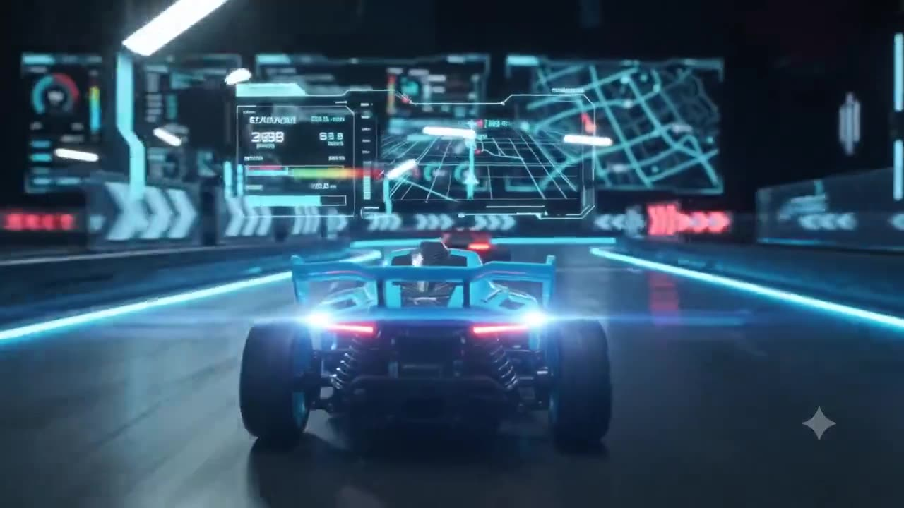
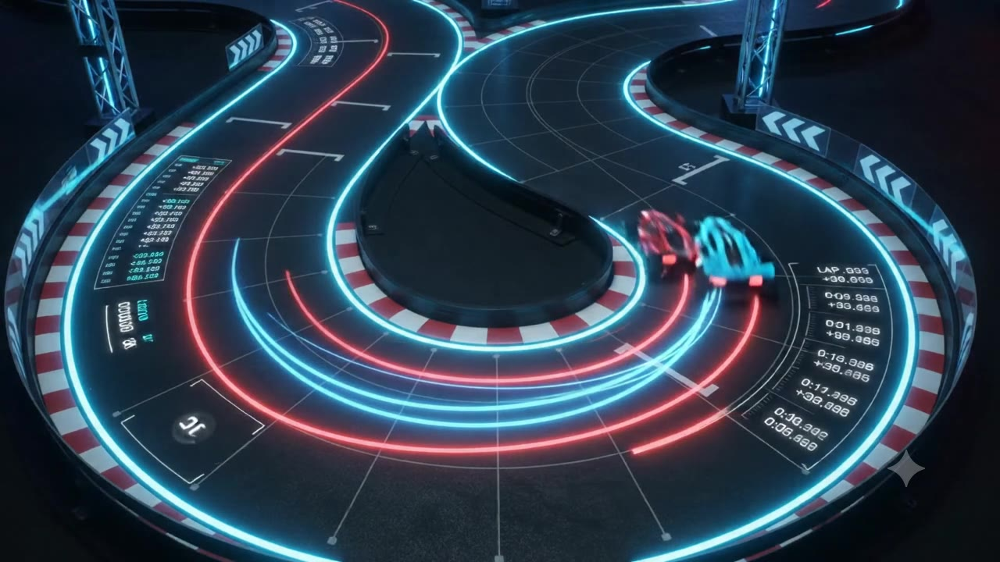
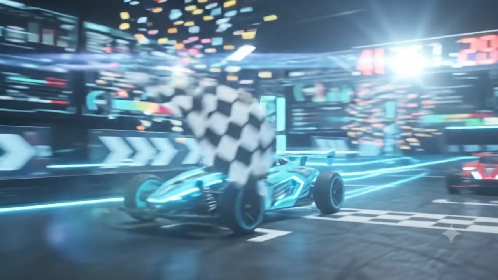

IB MYP DESIGN · CRITERION D
데이터로 평가하고, 더 빠르게 개선하기
모동중학교 2학년 수송 기술 - 친환경 자동차 제작

QUESTION · 생각해 볼까요?
⚡ 직선 속도 1위
📏 직진 안정성 1위
⛰️ 등판 1위
TODAY’S MISSION
01
시험 데이터를 근거로 내 자동차가 설계 목표를 달성했는지 판단한다
02
못 미친 원인을 차의 구조와 연결해 개선 방안을 마련한다.
MYP 기준 D
① 시험 방법 설명 · ② 설계 목표 대비 평가 · ③ 개선 방안 제시
EV GRAND PRIX | 도입
HOW TO EVALUATE
STEP 1 · DATA
3회 기록과 평균
“평균 1.41초”
STEP 2 · JUDGE
목표와 비교
“목표 1.45초 — 달성”
STEP 3 · UPGRADE
원인과 바꿀 점
“바퀴 정렬을 고친다”
“잘 됐다 / 안 됐다”로 끝나면 느낌, 데이터가 들어가면 평가입니다.
EV GRAND PRIX | 전개 1 · 데이터 읽는 법
3 TEST STAGES
⚡
1m를 통과하는 데 걸린 시간
단위: 초 ↓
📏
가운데 선에서 옆으로 벗어난 거리
단위: cm ↓
⛰️
15도 경사로를 올라가는 데 걸린 시간
단위: 초 ↓
EV GRAND PRIX | 전개 1 · 데이터 읽는 법

×3
WHY 3 TRIALS?
한 번은 우연이거나 실수일 수 있어요
여러 번 재서 평균을 내면
믿을 만한 값 = 신뢰성이 생겨요
EV GRAND PRIX | 전개 1 · 데이터 읽는 법
⚠ OUTLIER DETECTED
1회
1.40초
2회
1.42초
3회
1.88초
가운데 값(중앙값) 1.42초
3회는 0.46초 = 32% 차이
기준 20% 넘음 → 튀는 값
웹앱이 노란색으로 표시해 줍니다. 하지만 버릴지 말지는 여러분이 판단해요.
EV GRAND PRIX | 전개 1 · 데이터 읽는 법
▶ CHECK THE REPLAY
⏱️
출발 신호가 늦었다
스톱워치를 늦게 눌렀다
→ 빼고 평가해도 돼요
🔧
바퀴가 걸렸다, 전선이 빠졌다
배터리가 약해졌다
→ 빼면 안 돼요, 고칠 점이에요
EV GRAND PRIX | 전개 1 · 데이터 읽는 법
SPEED FORMULA
1 m
÷
1.40 s
=
0.71 m/s
통과 시간 작을수록 빠름
속력 클수록 빠름
EV GRAND PRIX | 전개 1 · 데이터 읽는 법
SAME CAR · DIFFERENT VERDICT
3회 모두 넣은 평균
1.57초
미달 · 0.12초 초과
튀는 값(측정 실수) 뺀 평균
1.41초
달성 · 0.04초 여유
근거에 따라 결론이 바뀝니다. 그래서 왜 그 평균을 썼는지까지 써야 해요.
EV GRAND PRIX | 전개 1 · 데이터 읽는 법
MISSION 01 · 개인 분석
1
웹앱 접속 → 수업코드 [수업코드] 입력
2
내 엔트리 번호 선택
3
노란 튀는 값이 있으면 그 회차 영상 확인
4
학습지 ② 기록표 → ③ 속력 → ④ 평가
EV GRAND PRIX | 전개 2 · 개인 분석 (13~30분)
DRIVER’S REPORT
내 차는 ( 항목 )에서 평균 ( 숫자 )로,
목표 ( 숫자 )보다 ( 차이 )만큼 좋았다 / 부족했다.
원인은 ( 차의 부분 )이고,
( 바꿀 점 )을 바꾸면 ( 얼마나 ) 좋아질 것이다.
숫자
판단
개선
EV GRAND PRIX | 전개 2 · 개인 분석
MISSION 02 · 피트 크루 회의
| 이럴 때 | 살펴볼 부분 |
|---|---|
| ⚡ 직선에서 느리다 | 모터 출력, 배터리 전압, 차 무게, 바퀴 마찰 |
| 📏 옆으로 휘어진다 | 바퀴 정렬, 축 휘어짐, 좌우 무게 균형 |
| ⛰️ 경사로가 느리다 | 기어비, 무게중심 위치, 바퀴 미끄러짐 |
“더 잘 만들기” ✕ → “무엇을 얼마나 바꿀까?” ✓ · 학습지 ⑤
EV GRAND PRIX | 전개 3 · 모둠 (30~38분)

🏁 FINISH LINE
처음 질문: 어떤 전기자동차가 가장 잘 만든 차일까?
성찰하는 사람 · 학습지 ⑥
오늘 나는 내 차를 ‘느낌’으로 평가했나, ‘근거’로 평가했나?
NEXT RACE · 다음 시간: 보완 후 우리 반 자동차 경주